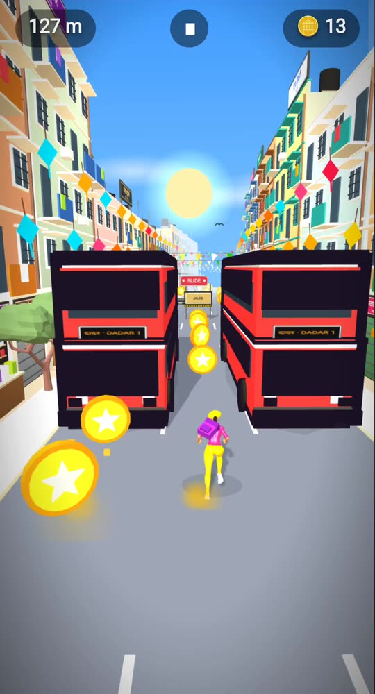
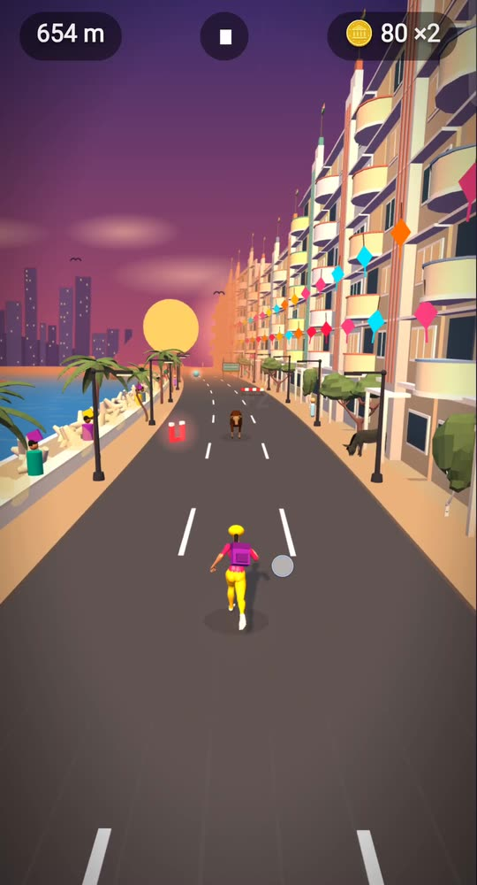
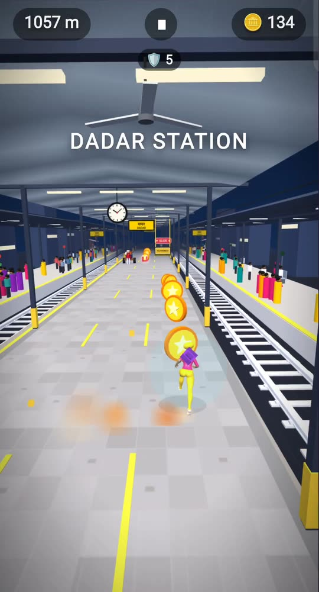
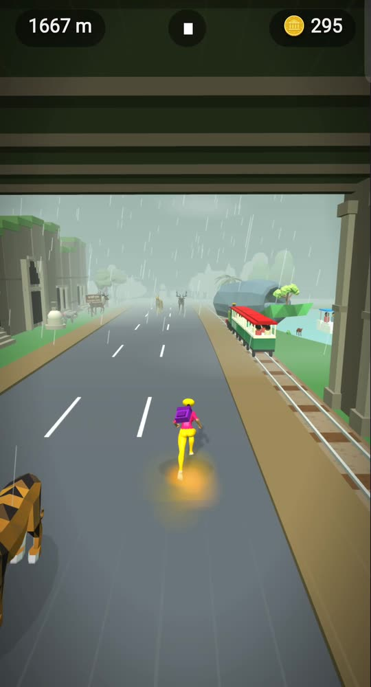
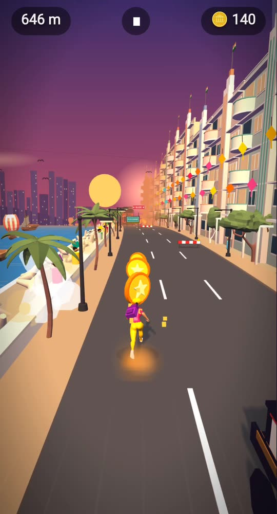

मुंबईCITY STREETS
भीड़, हॉर्न और रफ़्तार
Autos, taxis, thela carts, cows and dabbawalas on the move. Jump onto bus roofs for a roof run.
An endless runner set in Mumbai. Weave past kaali-peeli taxis and red BEST buses, sprint down Marine Drive at sunset, race along the platform at Dadar and chase the Van Rani toy train through Sanjay Gandhi National Park.
The city changes as you go, from busy streets to the sea, the station and the forest, and the run never stops.

Autos, taxis, thela carts, cows and dabbawalas on the move. Jump onto bus roofs for a roof run.

Sea on one side and Art Deco on the other. Tetrapods, waves over the wall and the Queen's Necklace across the bay.

Sprint down the platform past locals, luggage and the ticket checker, then on to Andheri, Bandra, Churchgate and more.

Monsoon forest, deer and leopards, the Kanheri caves and the Van Rani toy train running beside you.
The city dresses up for Diwali with akash kandils and fairy lights, and for Ganeshotsav with a pandal on the street.
गणपति बाप्पा मोरया!Auto horns, cycle bells, chai calls, seagulls, koels and real station announcements, plus a bhangra beat to run to.
चाय… चाय… चाय!Hop onto jeeps and buses and run along their roofs for bonus coins. Slide under banners and leap barriers.
एकदम झकास!Spend your coins on outfits, colour trails and longer power-ups like the magnet and shield.
कमाओ, खर्च करो, फिर दौड़ोMissions and personal bests keep every run different, from near misses to coin chains and roof runs.
आज का टारगेट?No sign-in and no internet needed to run. Your progress is saved on your phone.
नेटवर्क नहीं? कोई बात नहीं।
Want to test it early? Write to us and we'll add you to the testing group.